E-R Diagram
ER-Diagram is a visual representation of data that describes how data is related to each other.
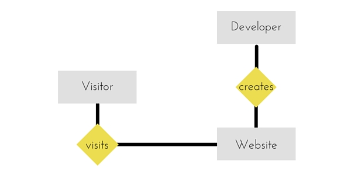
Symbols and Notations
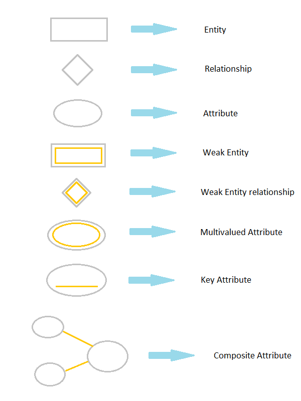
Components of E-R Diagram
The E-R diagram has three main components.
1) Entity
An Entity can be any object, place, person or class. In E-R Diagram, an entity is represented using rectangles. Consider an example of an Organisation. Employee, Manager, Department, Product and many more can be taken as entities from an Organisation.
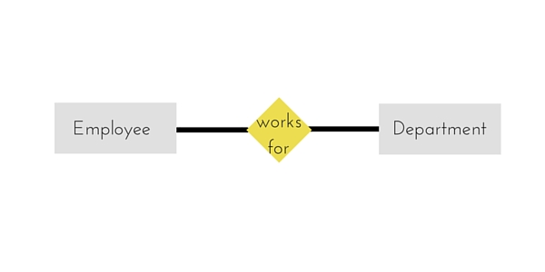
Weak Entity
Weak entity is an entity that depends on another entity. Weak entity doen't have key attribute of their own. Double rectangle represents weak entity.
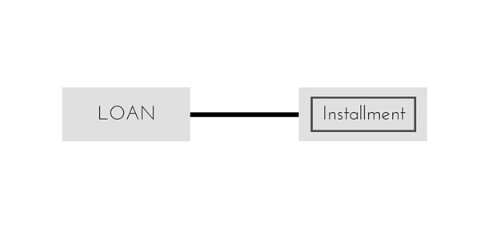
2) Attribute
An Attribute describes a property or characterstic of an entity. For example, Name, Age, Address etc can be attributes of a Student. An attribute is represented using eclipse.
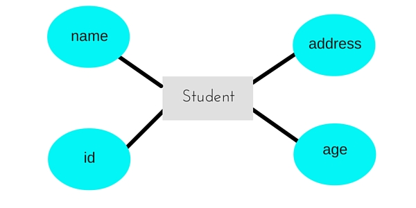
Key Attribute
Key attribute represents the main characterstic of an Entity. It is used to represent Primary key. Ellipse with underlying lines represent Key Attribute.
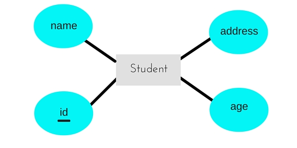
Composite Attribute
An attribute can also have their own attributes. These attributes are known as Composite attribute.
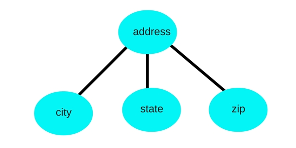
3) Relationship
A Relationship describes relations between entities. Relationship is represented using diamonds.
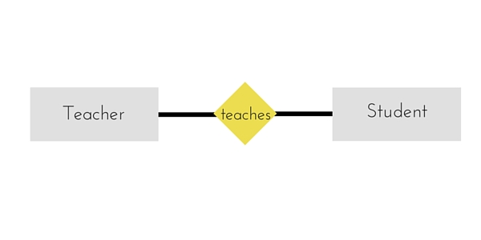
There are three types of relationship that exist between Entities.
- Binary Relationship
- Recursive Relationship
- Ternary Relationship
Binary Relationship
Binary Relationship means relation between two Entities. This is further divided into three types.
- One to One : This type of relationship is rarely seen in real world.
- One to Many : It reflects business rule that one entity is associated with many number of same entity. The example for this relation might sound a little weird, but this menas that one student can enroll to many courses, but one course will have one Student.
- Many to One : It reflects business rule that many entities can be associated with just one entity. For example, Student enrolls for only one Course but a Course can have many Students.
- Many to Many :
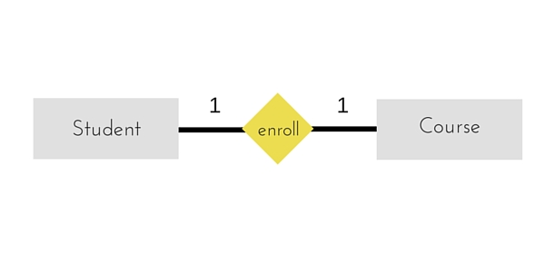
The above example describes that one student can enroll only for one course and a course will also have only one Student. This is not what you will usually see in relationship.

The arrows in the diagram describes that one student can enroll for only one course.
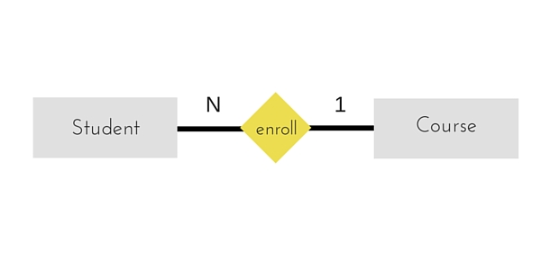
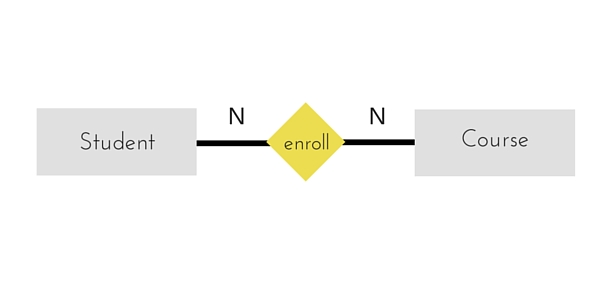
The above diagram represents that many students can enroll for more than one courses.
Recursive Relationship
When an Entity is related with itself it is known as Recursive Relationship.
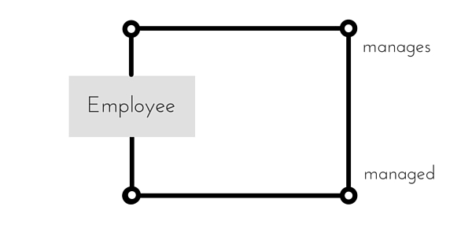
Ternary Relationship
Relationship of degree three is called Ternary relationship.